2025 Higher Biology - Paper 2 marking instructions
Source: Scottish Qualifications Authority (SQA) / Qualifications Scotland. This is a StemInteract HTML companion, not an official HTML edition. Selectable text is supplied alongside original page images. Use the images or original PDF for equations, powers, fractions, vector notation, tables and diagrams; text extraction cannot fully preserve mathematical layout.
Jump to a question
PDF page 1
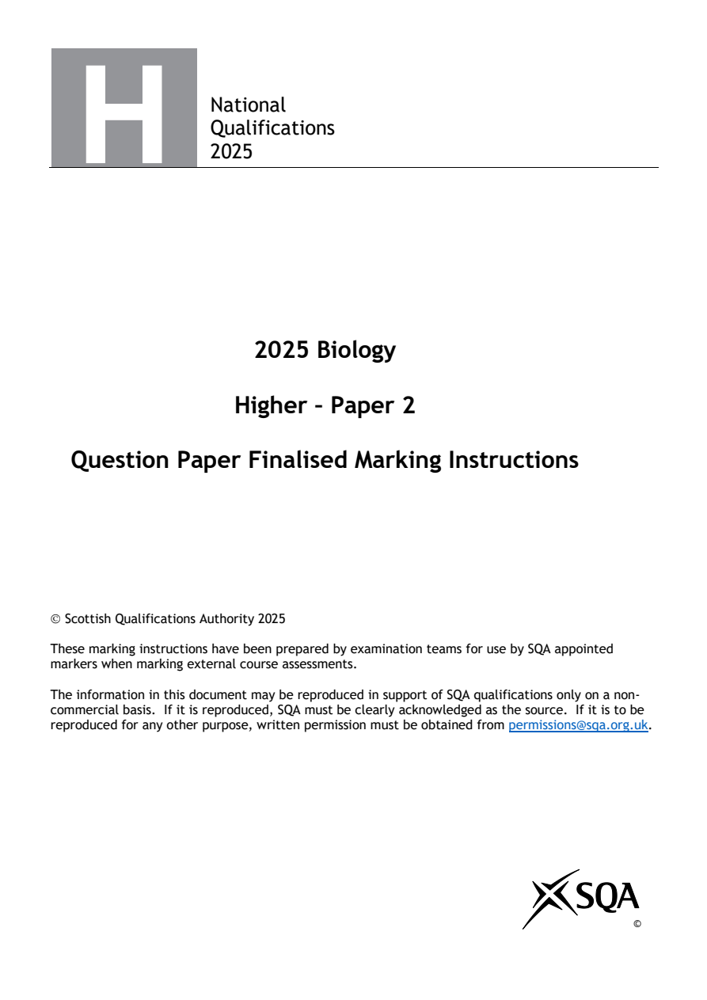
Selectable page text
National
Qualifications
2025
2025 Biology
Higher – Paper 2
Question Paper Finalised Marking Instructions
© Scottish Qualifications Authority 2025
These marking instructions have been prepared by examination teams for use by SQA appointed
markers when marking external course assessments.
The information in this document may be reproduced in support of SQA qualifications only on a non-
commercial basis. If it is reproduced, SQA must be clearly acknowledged as the source. If it is to be
reproduced for any other purpose, written permission must be obtained from permissions@sqa.org.uk.
©PDF page 2
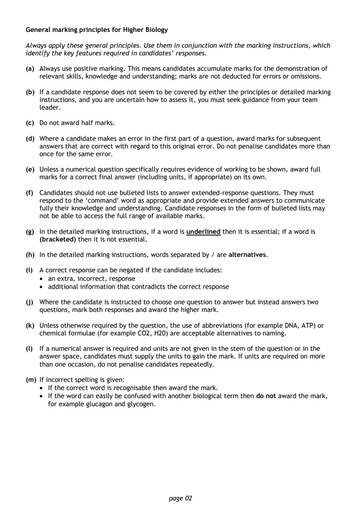
Selectable page text
General marking principles for Higher Biology
Always apply these general principles. Use them in conjunction with the marking instructions, which
identify the key features required in candidates’ responses.
(a) Always use positive marking. This means candidates accumulate marks for the demonstration of
relevant skills, knowledge and understanding; marks are not deducted for errors or omissions.
(b) If a candidate response does not seem to be covered by either the principles or detailed marking
instructions, and you are uncertain how to assess it, you must seek guidance from your team
leader.
(c) Do not award half marks.
(d) Where a candidate makes an error in the first part of a question, award marks for subsequent
answers that are correct with regard to this original error. Do not penalise candidates more than
once for the same error.
(e) Unless a numerical question specifically requires evidence of working to be shown, award full
marks for a correct final answer (including units, if appropriate) on its own.
(f) Candidates should not use bulleted lists to answer extended-response questions. They must
respond to the ‘command’ word as appropriate and provide extended answers to communicate
fully their knowledge and understanding. Candidate responses in the form of bulleted lists may
not be able to access the full range of available marks.
(g) In the detailed marking instructions, if a word is underlined then it is essential; if a word is
(bracketed) then it is not essential.
(h) In the detailed marking instructions, words separated by / are alternatives.
(i) A correct response can be negated if the candidate includes:
• an extra, incorrect, response
• additional information that contradicts the correct response
(j) Where the candidate is instructed to choose one question to answer but instead answers two
questions, mark both responses and award the higher mark.
(k) Unless otherwise required by the question, the use of abbreviations (for example DNA, ATP) or
chemical formulae (for example CO2, H20) are acceptable alternatives to naming.
(l) If a numerical answer is required and units are not given in the stem of the question or in the
answer space, candidates must supply the units to gain the mark. If units are required on more
than one occasion, do not penalise candidates repeatedly.
(m) If incorrect spelling is given:
• If the correct word is recognisable then award the mark.
• If the word can easily be confused with another biological term then do not award the mark,
for example glucagon and glycogen.
page 02PDF page 3
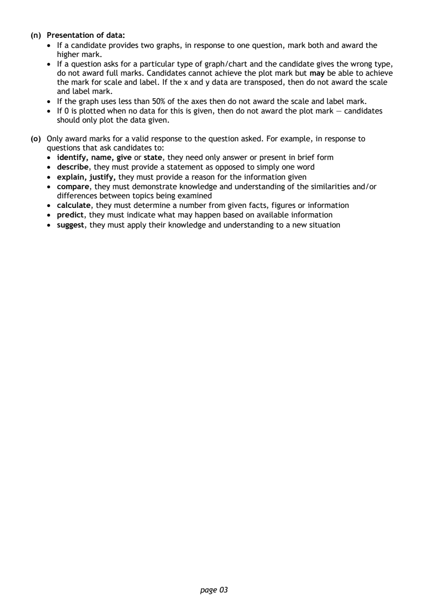
Selectable page text
(n) Presentation of data:
• If a candidate provides two graphs, in response to one question, mark both and award the
higher mark.
• If a question asks for a particular type of graph/chart and the candidate gives the wrong type,
do not award full marks. Candidates cannot achieve the plot mark but may be able to achieve
the mark for scale and label. If the x and y data are transposed, then do not award the scale
and label mark.
• If the graph uses less than 50% of the axes then do not award the scale and label mark.
• If 0 is plotted when no data for this is given, then do not award the plot mark — candidates
should only plot the data given.
(o) Only award marks for a valid response to the question asked. For example, in response to
questions that ask candidates to:
• identify, name, give or state, they need only answer or present in brief form
• describe, they must provide a statement as opposed to simply one word
• explain, justify, they must provide a reason for the information given
• compare, they must demonstrate knowledge and understanding of the similarities and/or
differences between topics being examined
• calculate, they must determine a number from given facts, figures or information
• predict, they must indicate what may happen based on available information
• suggest, they must apply their knowledge and understanding to a new situation
page 03PDF page 4
Paper 2, Question 1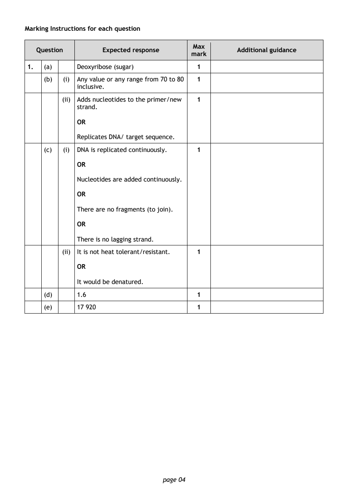
Selectable page text
Marking Instructions for each question
Max
Question Expected response Additional guidance
mark
1. (a) Deoxyribose (sugar) 1
(b) (i) Any value or any range from 70 to 80 1
inclusive.
(ii) Adds nucleotides to the primer/new 1
strand.
OR
Replicates DNA/ target sequence.
(c) (i) DNA is replicated continuously. 1
OR
Nucleotides are added continuously.
OR
There are no fragments (to join).
OR
There is no lagging strand.
(ii) It is not heat tolerant/resistant. 1
OR
It would be denatured.
(d) 1.6 1
(e) 17 920 1
page 04PDF page 5
Paper 2, Question 2Paper 2, Question 3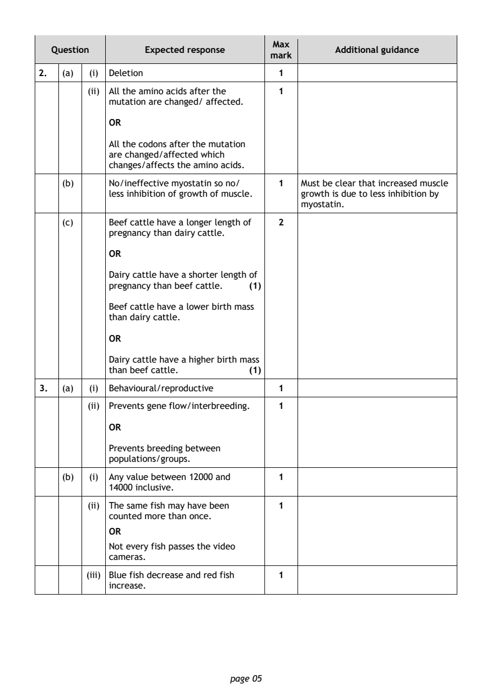
Selectable page text
Max
Question Expected response Additional guidance
mark
2. (a) (i) Deletion 1
(ii) All the amino acids after the 1
mutation are changed/ affected.
OR
All the codons after the mutation
are changed/affected which
changes/affects the amino acids.
(b) No/ineffective myostatin so no/ 1 Must be clear that increased muscle
less inhibition of growth of muscle. growth is due to less inhibition by
myostatin.
(c) Beef cattle have a longer length of 2
pregnancy than dairy cattle.
OR
Dairy cattle have a shorter length of
pregnancy than beef cattle. (1)
Beef cattle have a lower birth mass
than dairy cattle.
OR
Dairy cattle have a higher birth mass
than beef cattle. (1)
3. (a) (i) Behavioural/reproductive 1
(ii) Prevents gene flow/interbreeding. 1
OR
Prevents breeding between
populations/groups.
(b) (i) Any value between 12000 and 1
14000 inclusive.
(ii) The same fish may have been 1
counted more than once.
OR
Not every fish passes the video
cameras.
(iii) Blue fish decrease and red fish 1
increase.
page 05PDF page 6
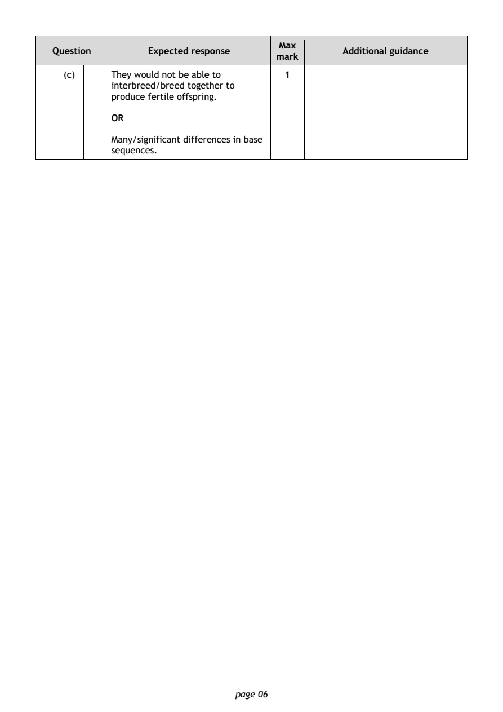
Selectable page text
Max
Question Expected response Additional guidance
mark
(c) They would not be able to 1
interbreed/breed together to
produce fertile offspring.
OR
Many/significant differences in base
sequences.
page 06PDF page 7
Paper 2, Question 4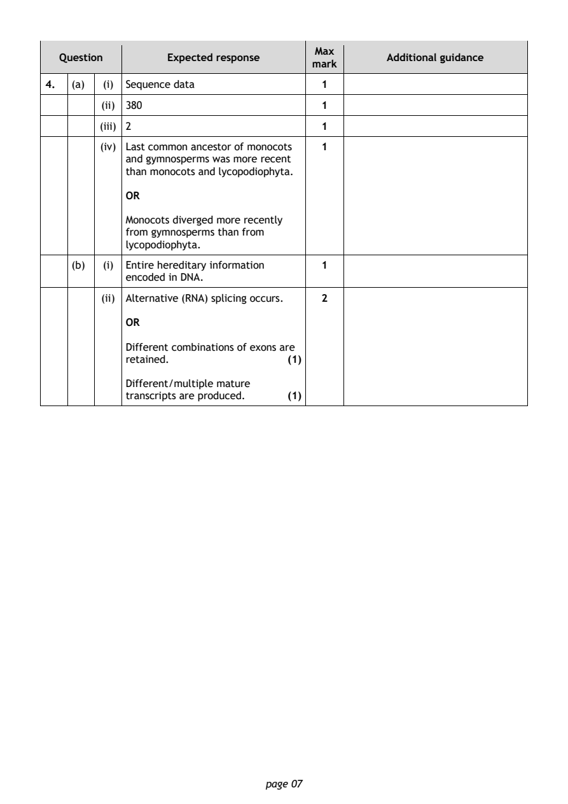
Selectable page text
Max
Question Expected response Additional guidance
mark
4. (a) (i) Sequence data 1
(ii) 380 1
(iii) 2 1
(iv) Last common ancestor of monocots 1
and gymnosperms was more recent
than monocots and lycopodiophyta.
OR
Monocots diverged more recently
from gymnosperms than from
lycopodiophyta.
(b) (i) Entire hereditary information 1
encoded in DNA.
(ii) Alternative (RNA) splicing occurs. 2
OR
Different combinations of exons are
retained. (1)
Different/multiple mature
transcripts are produced. (1)
page 07PDF page 8
Paper 2, Question 5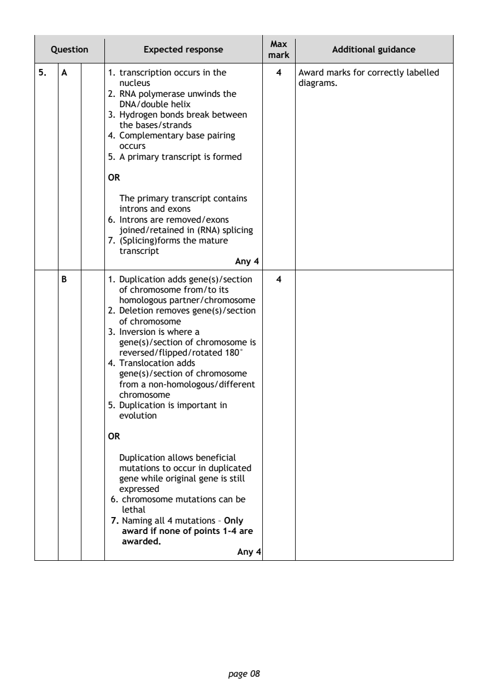
Selectable page text
Max
Question Expected response Additional guidance
mark
5. A 1. transcription occurs in the 4 Award marks for correctly labelled
nucleus diagrams.
2. RNA polymerase unwinds the
DNA/double helix
3. Hydrogen bonds break between
the bases/strands
4. Complementary base pairing
occurs
5. A primary transcript is formed
OR
The primary transcript contains
introns and exons
6. Introns are removed/exons
joined/retained in (RNA) splicing
7. (Splicing)forms the mature
transcript
Any 4
B 1. Duplication adds gene(s)/section 4
of chromosome from/to its
homologous partner/chromosome
2. Deletion removes gene(s)/section
of chromosome
3. Inversion is where a
gene(s)/section of chromosome is
reversed/flipped/rotated 180°
4. Translocation adds
gene(s)/section of chromosome
from a non-homologous/different
chromosome
5. Duplication is important in
evolution
OR
Duplication allows beneficial
mutations to occur in duplicated
gene while original gene is still
expressed
6. chromosome mutations can be
lethal
7. Naming all 4 mutations – Only
award if none of points 1-4 are
awarded.
Any 4
page 08PDF page 9
Paper 2, Question 6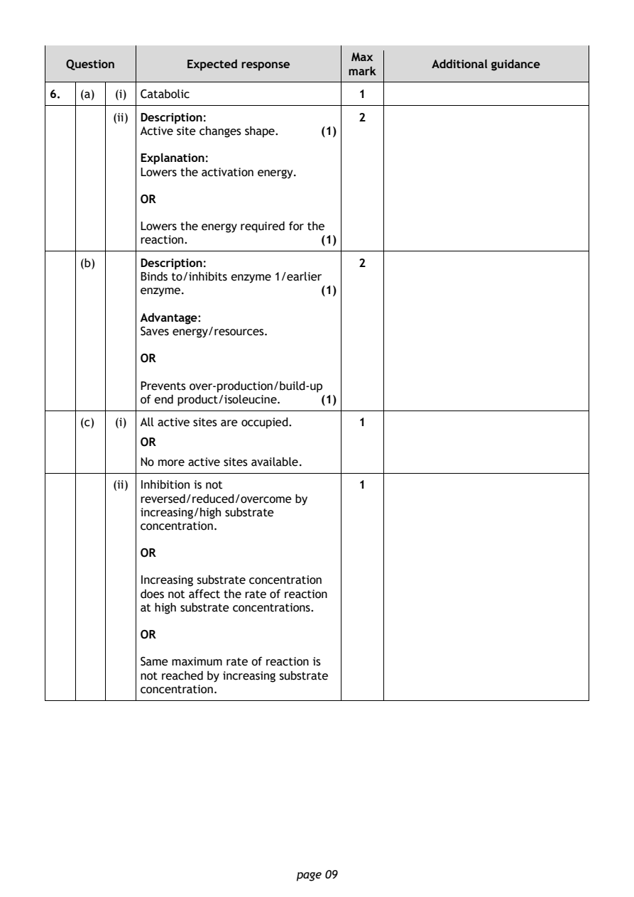
Selectable page text
Max
Question Expected response Additional guidance
mark
6. (a) (i) Catabolic 1
(ii) Description: 2
Active site changes shape. (1)
Explanation:
Lowers the activation energy.
OR
Lowers the energy required for the
reaction. (1)
(b) Description: 2
Binds to/inhibits enzyme 1/earlier
enzyme. (1)
Advantage:
Saves energy/resources.
OR
Prevents over-production/build-up
of end product/isoleucine. (1)
(c) (i) All active sites are occupied. 1
OR
No more active sites available.
(ii) Inhibition is not 1
reversed/reduced/overcome by
increasing/high substrate
concentration.
OR
Increasing substrate concentration
does not affect the rate of reaction
at high substrate concentrations.
OR
Same maximum rate of reaction is
not reached by increasing substrate
concentration.
page 09PDF page 10
Paper 2, Question 7Paper 2, Question 8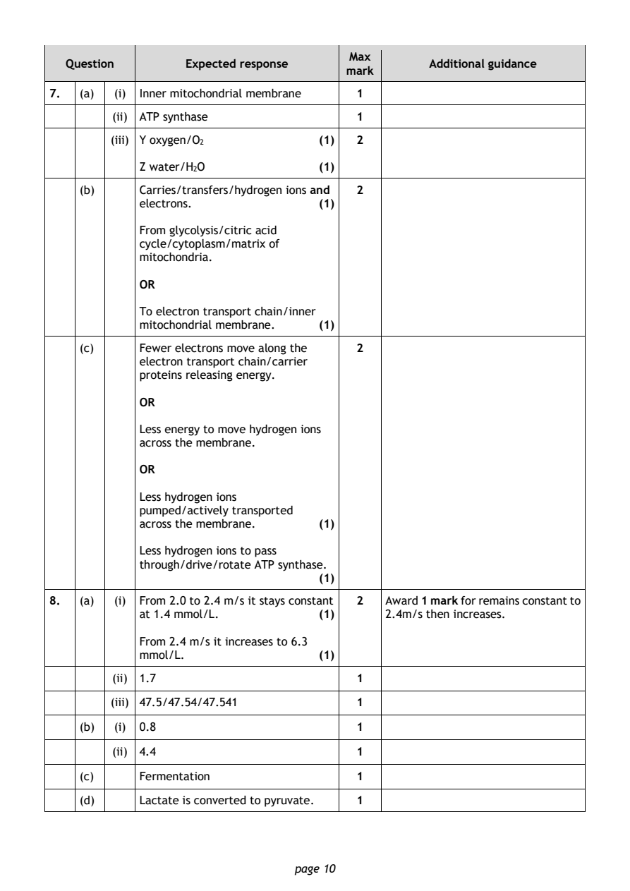
Selectable page text
Max
Question Expected response Additional guidance
mark
7. (a) (i) Inner mitochondrial membrane 1
(ii) ATP synthase 1
(iii) Y oxygen/O (1) 2
2
Z water/H O (1)
2
(b) Carries/transfers/hydrogen ions and 2
electrons. (1)
From glycolysis/citric acid
cycle/cytoplasm/matrix of
mitochondria.
OR
To electron transport chain/inner
mitochondrial membrane. (1)
(c) Fewer electrons move along the 2
electron transport chain/carrier
proteins releasing energy.
OR
Less energy to move hydrogen ions
across the membrane.
OR
Less hydrogen ions
pumped/actively transported
across the membrane. (1)
Less hydrogen ions to pass
through/drive/rotate ATP synthase.
(1)
8. (a) (i) From 2.0 to 2.4 m/s it stays constant 2 Award 1 mark for remains constant to
at 1.4 mmol/L. (1) 2.4m/s then increases.
From 2.4 m/s it increases to 6.3
mmol/L. (1)
(ii) 1.7 1
(iii) 47.5/47.54/47.541 1
(b) (i) 0.8 1
(ii) 4.4 1
(c) Fermentation 1
(d) Lactate is converted to pyruvate. 1
page 10PDF page 11
Paper 2, Question 9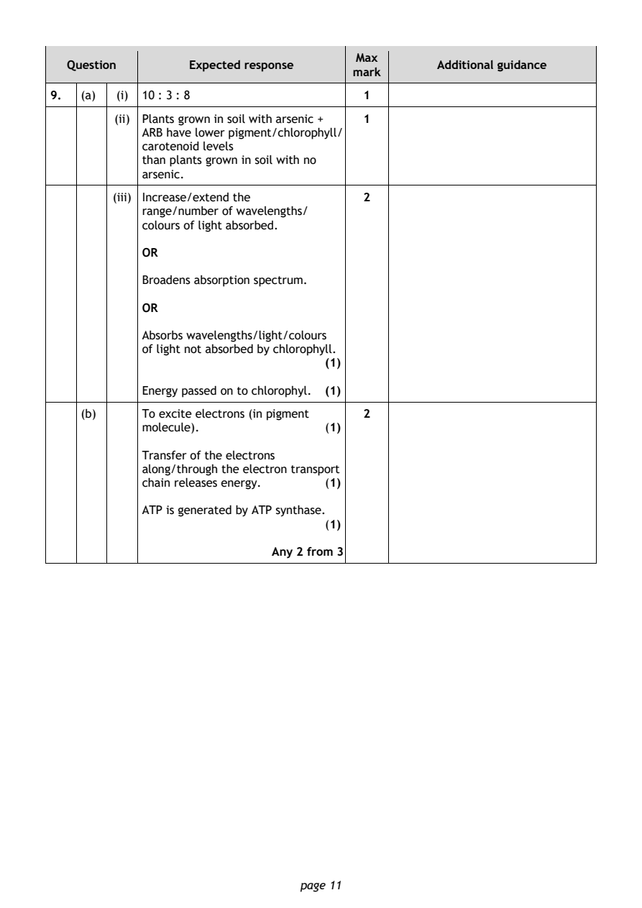
Selectable page text
Max
Question Expected response Additional guidance
mark
9. (a) (i) 10 : 3 : 8 1
(ii) Plants grown in soil with arsenic + 1
ARB have lower pigment/chlorophyll/
carotenoid levels
than plants grown in soil with no
arsenic.
(iii) Increase/extend the 2
range/number of wavelengths/
colours of light absorbed.
OR
Broadens absorption spectrum.
OR
Absorbs wavelengths/light/colours
of light not absorbed by chlorophyll.
(1)
Energy passed on to chlorophyl. (1)
(b) To excite electrons (in pigment 2
molecule). (1)
Transfer of the electrons
along/through the electron transport
chain releases energy. (1)
ATP is generated by ATP synthase.
(1)
Any 2 from 3
page 11PDF page 12
Paper 2, Question 10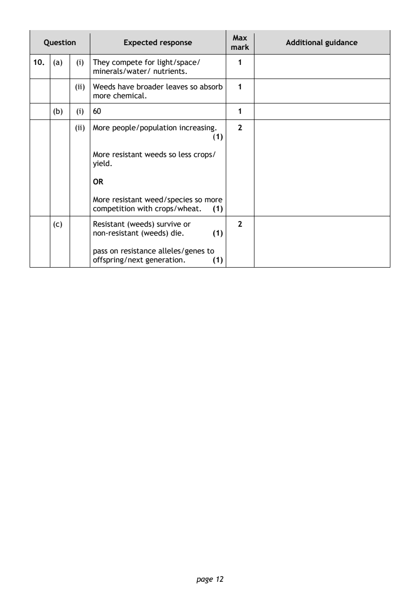
Selectable page text
Max
Question Expected response Additional guidance
mark
10. (a) (i) They compete for light/space/ 1
minerals/water/ nutrients.
(ii) Weeds have broader leaves so absorb 1
more chemical.
(b) (i) 60 1
(ii) More people/population increasing. 2
(1)
More resistant weeds so less crops/
yield.
OR
More resistant weed/species so more
competition with crops/wheat. (1)
(c) Resistant (weeds) survive or 2
non-resistant (weeds) die. (1)
pass on resistance alleles/genes to
offspring/next generation. (1)
page 12PDF page 13
Paper 2, Question 11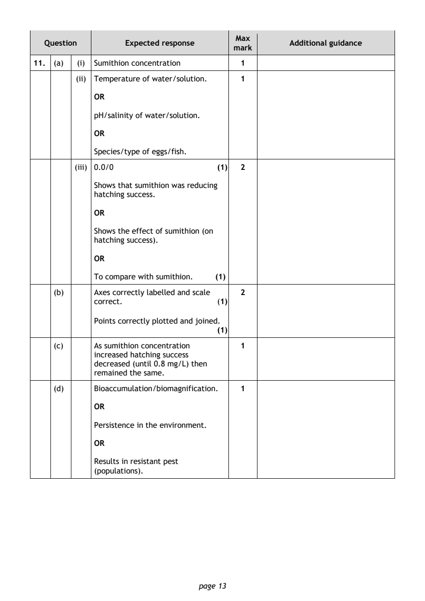
Selectable page text
Max
Question Expected response Additional guidance
mark
11. (a) (i) Sumithion concentration 1
(ii) Temperature of water/solution. 1
OR
pH/salinity of water/solution.
OR
Species/type of eggs/fish.
(iii) 0.0/0 (1) 2
Shows that sumithion was reducing
hatching success.
OR
Shows the effect of sumithion (on
hatching success).
OR
To compare with sumithion. (1)
(b) Axes correctly labelled and scale 2
correct. (1)
Points correctly plotted and joined.
(1)
(c) As sumithion concentration 1
increased hatching success
decreased (until 0.8 mg/L) then
remained the same.
(d) Bioaccumulation/biomagnification. 1
OR
Persistence in the environment.
OR
Results in resistant pest
(populations).
page 13PDF page 14
Paper 2, Question 12Paper 2, Question 13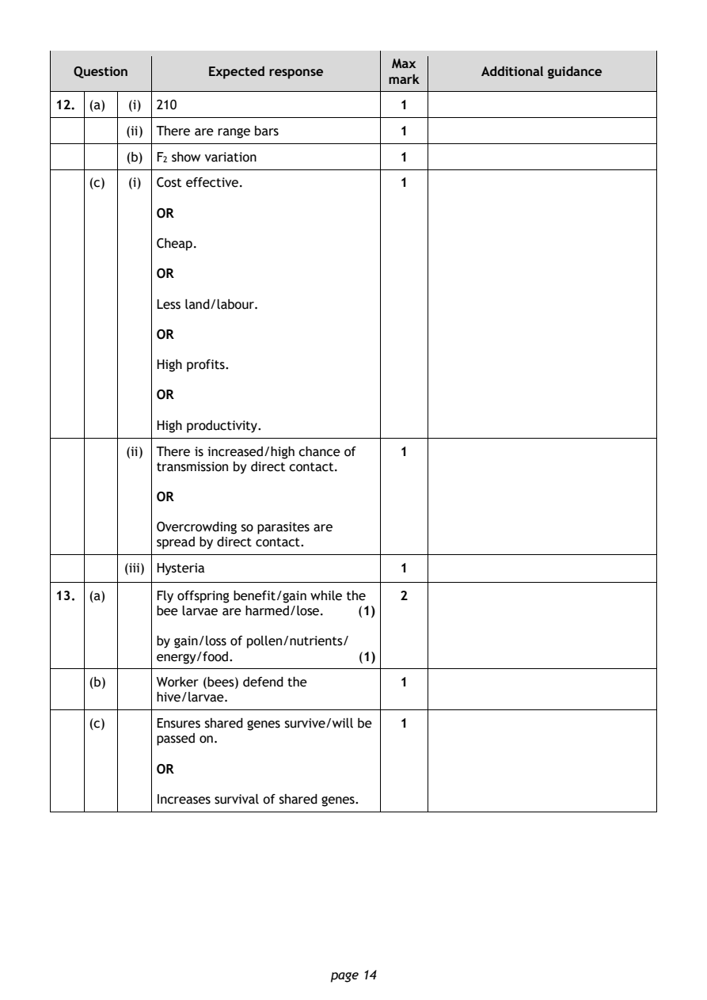
Selectable page text
Max
Question Expected response Additional guidance
mark
12. (a) (i) 210 1
(ii) There are range bars 1
(b) F show variation 1
2
(c) (i) Cost effective. 1
OR
Cheap.
OR
Less land/labour.
OR
High profits.
OR
High productivity.
(ii) There is increased/high chance of 1
transmission by direct contact.
OR
Overcrowding so parasites are
spread by direct contact.
(iii) Hysteria 1
13. (a) Fly offspring benefit/gain while the 2
bee larvae are harmed/lose. (1)
by gain/loss of pollen/nutrients/
energy/food. (1)
(b) Worker (bees) defend the 1
hive/larvae.
(c) Ensures shared genes survive/will be 1
passed on.
OR
Increases survival of shared genes.
page 14PDF page 15
Paper 2, Question 14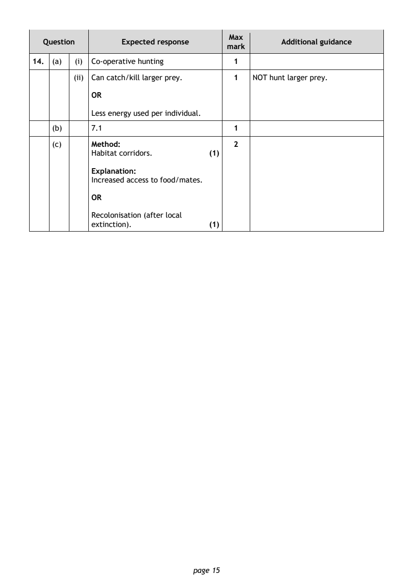
Selectable page text
Max
Question Expected response Additional guidance
mark
14. (a) (i) Co-operative hunting 1
(ii) Can catch/kill larger prey. 1 NOT hunt larger prey.
OR
Less energy used per individual.
(b) 7.1 1
(c) Method: 2
Habitat corridors. (1)
Explanation:
Increased access to food/mates.
OR
Recolonisation (after local
extinction). (1)
page 15PDF page 16
Paper 2, Question 15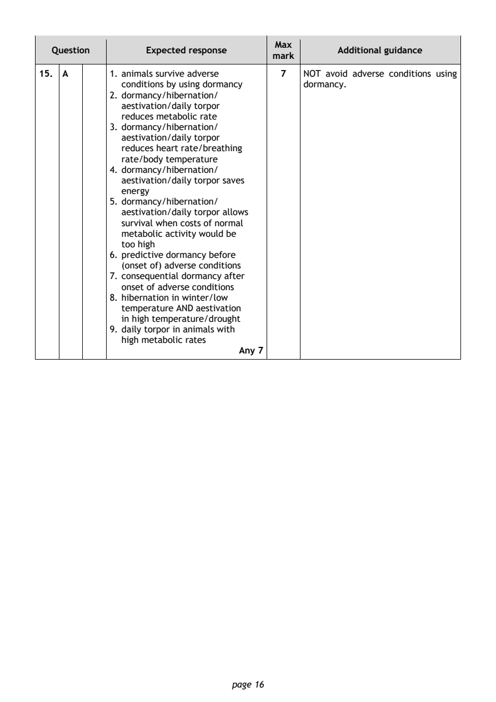
Selectable page text
Max
Question Expected response Additional guidance
mark
15. A 1. animals survive adverse 7 NOT avoid adverse conditions using
conditions by using dormancy dormancy.
2. dormancy/hibernation/
aestivation/daily torpor
reduces metabolic rate
3. dormancy/hibernation/
aestivation/daily torpor
reduces heart rate/breathing
rate/body temperature
4. dormancy/hibernation/
aestivation/daily torpor saves
energy
5. dormancy/hibernation/
aestivation/daily torpor allows
survival when costs of normal
metabolic activity would be
too high
6. predictive dormancy before
(onset of) adverse conditions
7. consequential dormancy after
onset of adverse conditions
8. hibernation in winter/low
temperature AND aestivation
in high temperature/drought
9. daily torpor in animals with
high metabolic rates
Any 7
page 16PDF page 17
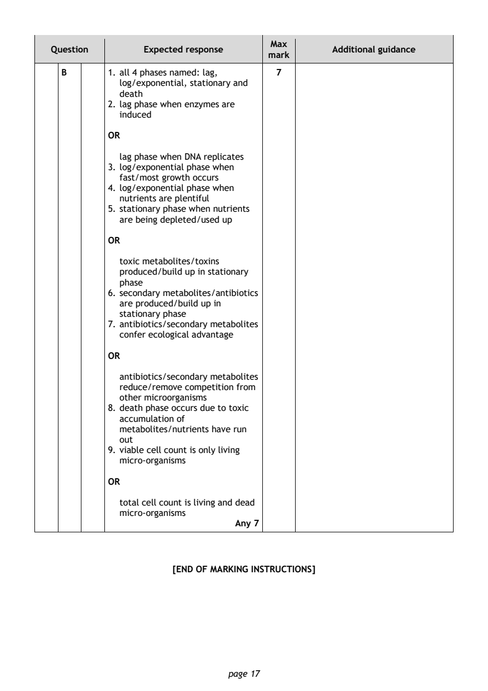
Selectable page text
Max
Question Expected response Additional guidance
mark
B 1. all 4 phases named: lag, 7
log/exponential, stationary and
death
2. lag phase when enzymes are
induced
OR
lag phase when DNA replicates
3. log/exponential phase when
fast/most growth occurs
4. log/exponential phase when
nutrients are plentiful
5. stationary phase when nutrients
are being depleted/used up
OR
toxic metabolites/toxins
produced/build up in stationary
phase
6. secondary metabolites/antibiotics
are produced/build up in
stationary phase
7. antibiotics/secondary metabolites
confer ecological advantage
OR
antibiotics/secondary metabolites
reduce/remove competition from
other microorganisms
8. death phase occurs due to toxic
accumulation of
metabolites/nutrients have run
out
9. viable cell count is only living
micro-organisms
OR
total cell count is living and dead
micro-organisms
Any 7
[END OF MARKING INSTRUCTIONS]
page 17